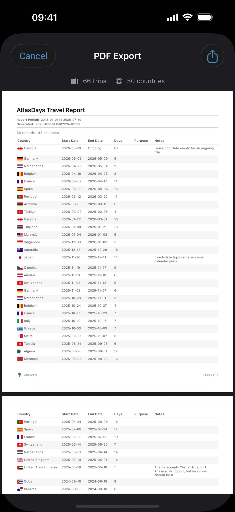

Export and Reports
Last updated: April 11, 2026
Troubleshoot export availability, period-filter confusion, and missing trips while understanding what CSV export and PDF export actually contain.
What This Page Helps You Do
Use this page when export seems unavailable, a trip looks missing, the selected period is confusing, or you need to know whether CSV export or PDF export is the right tool.
By the end of this page, you should know:
- why export can look wrong even when the trip record feels close
- what CSV export and PDF export actually contain
- what to verify before you export a record you plan to trust
Export reflects the trip record you have now. It does not repair bad dates, resolve overlaps, or turn approximate history into exact proof. Clean the record first, then export it.
When Export Looks Wrong
Most export problems come from period selection, record quality, or feature gating rather than silent data loss. Check these first:
- The selected export period is often the real reason a trip seems missing.
- If the selected period contains no trips, the export buttons stay disabled.
- Unknown trips only appear in All Time exports because AtlasDays cannot place them in a filtered Year or Range.
- The State column appears in CSV export only when at least one exported trip has a US state tag.
- ongoing trips keep changing until you close them, so exported day spans can keep changing too.
- Export reflects the current trip record. It does not fix bad dates, conflicts, duplicates, overlaps, or approximate history.
- In the current app, both CSV export and PDF export require AtlasDays Pro. If you expected export on the free tier, that is not a bug.
When Export Is Useful
- use CSV export when you want a spreadsheet-friendly copy of your trip record for inspection, backup, transfer, or re-import
- use PDF export when you want a cleaner report for human review, records, or paperwork
- export before major cleanup if you want a checkpoint, and after cleanup if you want a record you can rely on
In the current app, both CSV export and PDF export require AtlasDays Pro.
Where Export Lives in the App
Go to Settings > Export. AtlasDays lets you choose the export period and preview either CSV export or PDF export before you share the file.
If AtlasDays Pro is not active, export is unavailable by design. If AtlasDays Pro is active but the selected period contains no trips, the export buttons stay disabled and AtlasDays shows No trips in the selected period.
If you believe AtlasDays Pro should already be active but export is still locked, check the in-app Pro sheet and its Restore action before treating it as an export-period problem.
When nothing is exportable, check the selected period first. That is usually the issue, not silent data loss.
Choose the Right Export Scope First
Export is period-based. The screen supports:
- All Time
- Year, including a custom fiscal-year-style period
- Range, using presets like 365, 180, 90, 30, or 7 days, or a custom start and end date
If you export a limited Year or Range, AtlasDays only includes trips it can place in that period. Filtered exports can legitimately omit trips that fall outside the selected period or cannot be placed there.
Unknown trips only appear in All Time exports because they have no dates to place in a filtered period. If a trip seems missing, verify All Time versus the selected Year or Range before assuming a bug.
CSV Export: What It Is For
CSV export is the trip-data format. It is best when you want to inspect the record in a spreadsheet, keep a portable copy, transfer it elsewhere, or re-import the same trip record later.
The exported CSV contains these columns. If the selected export includes at least one state-tagged United States trip, AtlasDays also includes State after Country:
CountryState, only when the export includes US state-tagged tripsStart DateEnd DateDaysPurposeNotes (optional)
What those fields mean in practice:
- Country is exported as a human-readable place name.
- State is exported as a human-readable state name for state-tagged United States trips and stays blank for other rows.
- Exact Dates trips export exact dates in
yyyy-mm-dd. - Year trips export years in the Start Date and End Date columns.
- Unknown trips export with blank date fields.
- ongoing trips export with a blank End Date.
- Days is blank for Year and Unknown trips because they do not create exact day totals.
- Purpose exports selected trip purposes such as Tourism, Personal, Business, Medical, or Transit.
- Notes export exactly as stored on the trip.
CSV export is trip data only. It does not export tracker definitions, home-country configuration, or all app settings. It does preserve saved US state tags when those trips are in the exported period.
If the CSV looks wrong, the issue is usually in the selected period or the underlying trip record, not in a separate hidden export layer.
How CSV Export Relates to Import
Import brings trip data into AtlasDays. Export takes your current AtlasDays trip record out.
AtlasDays can import its own exported CSV later because the importer accepts the extra Days column in the export format, and it can read the State column for United States trips. If your goal is backup or transfer, export is the right tool. If your goal is rebuilding older history into the app, use CSV Import.
PDF Export: When It Fits

PDF export is the report-style output. It is better when you want a cleaner document for review, records, or paperwork rather than a spreadsheet.
The PDF report includes a trip table built from the currently selected export period. Depending on the options you choose, it can also include:
- Traveler Information such as name, passport number, and nationality
- Trip Order, either Chronological or By Country
- Country Summary in chronological reports
- Purpose, Notes, and night-counting display options
- Approximate Date Trips appendix when that option is enabled
- App Branding
- Disclaimer
PDF export is not raw trip data and it is not an independent cross-check. It is a report built from the same selected period and trip record you already have in the app.
If you turn on the disclaimer option, the PDF states that the report is based on user-entered data and is not an official travel record.
What Export Does Not Do
- It does not repair dates.
- It does not resolve duplicates, overlaps, or conflicts for you.
- It does not convert Year or Unknown into Exact Dates.
- It does not make a messy record compliance-grade on its own.
What to Verify Before You Export
- Check the selected period first: All Time, Year, or Range.
- If a trip matters to the export, confirm whether it is stored as Exact Dates, Year, or Unknown.
- Resolve any date conflicts in Timeline before you export a record you plan to trust.
- Close ongoing trips if you need a fixed end date. Otherwise the exported day span will keep changing.
- Make sure trips that matter to a visa or residency threshold are stored as Exact Dates, not just Year or Unknown.
- Check whether Transit and other trip purposes are marked correctly, because they change what appears in exports and summaries.
- If US states matter, confirm the selected trips have state tags before exporting. A plain United States row cannot be reconstructed as a specific state from the export alone.
- Review notes before sharing, because export includes them.
- Pick the right output for the job: CSV export for inspection or transfer, PDF export for a report-style document.
How Export Relates to Trackers and Dashboard
Export is built from your trip record. If the trip record is incomplete or approximate, the export will reflect that.
- Tracker trust still depends on exact trips and clean conflict-free history.
- CSV export is trip output, not a separate compliance calculation.
- PDF export summarizes trips and countries in the selected period; it does not export tracker definitions.
- Dashboard is still the best place to inspect how the app is interpreting your record before you share it.
Where to go next
Trip Modes and Record Quality explains how Exact Dates, Year, Unknown, Transit, and ongoing trips affect exported output.
Dashboard and Map helps you review the selected period and the trips behind it before exporting.
CSV Import explains how to clean up or rebuild bulk history before exporting it back out.
Trackers and Limits explains how much confidence to place in tracker-related output before you share a report.
iCloud Sync and Restore is the right page if you are using export as a backup or device-migration fallback instead of iCloud sync.
Getting Started explains the setup order that produces cleaner exports later.